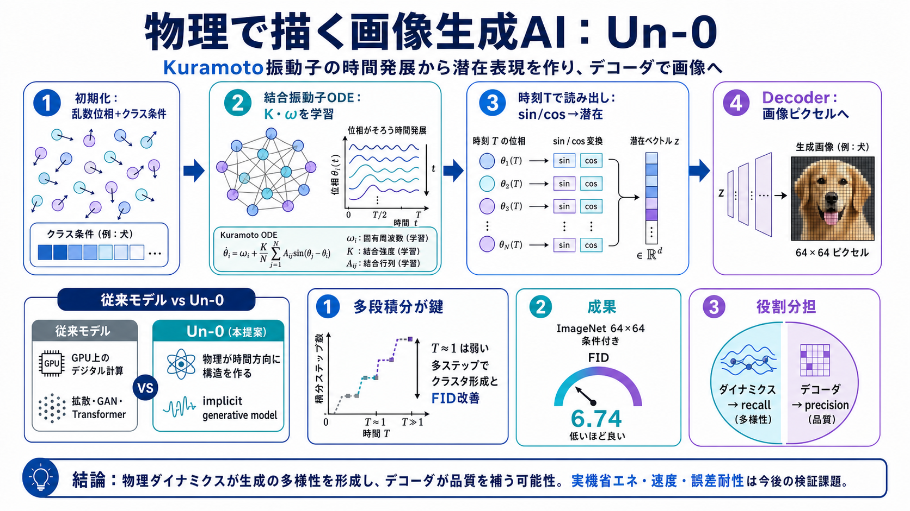

Kuramoto model - Wikipedia
The **Kuramoto model** (or **Kuramoto–Daido model**), first proposed by Yoshiki Kuramoto (蔵本 由紀, *Kuramoto Yoshiki*), is…

物理で描く
結合振動子（Kuramoto振動子）の時間発展（ODE）を計算基盤にして、画像を生成するUnconventional AIのモデルです。
なぜ物理？
従来の画像生成はGPU上の「デジタル計算（多層ネットの順伝播）」が中心ですが、Un-0は「物理が時間方向に作る構造」を使いたい考えです。
位相が答え
振動子の「位相角（phase）」が時間で結合し、クラス条件に沿った“まとまり”を形成してから画像へ変換されます。
学習するのは？
学習可能な主要部分は、結合行列K・自然周波数ω、そして小さめのデコーダ側です。
生成の手順
乱数初期位相を与え、ODEで時間発展させて時刻Tの位相を潜在表現に変換し、最後にデコーダで画像にします。
効いたのは？
DecoderのみやReservoirのみの代替設定では厳しく、学習済みダイナミクスが性能に寄与すると示しています。
多段が鍵
積分ステップ数が重要で、1ステップ近辺では不十分、ステップを増やすとクラスタ形成やFIDが改善する傾向があります。
スコア
ImageNet 64×64のクラス条件付きでFID 6.74を達成し、初期の有力手法と同程度の品質レンジに到達したと主張しています。
どっちが良い？
FIDが改善しても“どこが効いたか”は別問題で、Precision/Recall解析では改善の多くがrecall（多様性）側にあると報告しています。
“物理”の位置
Un-0は拡散モデルやGANと同じ種類ではなく、「implicit generative model」として、振動子の時間発展から潜在表現を作ります。
見方（賛否）
強みは、結合行列Kや周波数ωを明確にし、対照実験で“物理ダイナミクスの寄与”を分解している点です。一方で、省エネ約1000倍はシミュレーション依存で、実機・比較の公平性は追加検証が必要です。
結論
Un-0は「物理ダイナミクスを生成モデルにする」初期成果として筋が通り、改善要因はダイナミクスが主に多様性（recall）側を形成し、デコーダが品質（precision）を補う可能性が示唆されます。
The **Kuramoto model** (or **Kuramoto–Daido model**), first proposed by Yoshiki Kuramoto (蔵本 由紀, *Kuramoto Yoshiki*), is…
Orientation-rich images, such as fingerprints and textures, often exhibit coherent angular directional patterns that are…
The Kuramoto model is a simple mathematical model which is widely used to study the synchronization dynamics of such cou…
Kuramoto model, a mathematical model that speaks to the very nature of coupled oscillating processes, and which has eluc…
Here we construct a system of coupled Kuramoto oscillators that consume or produce resources as a function of their osci…